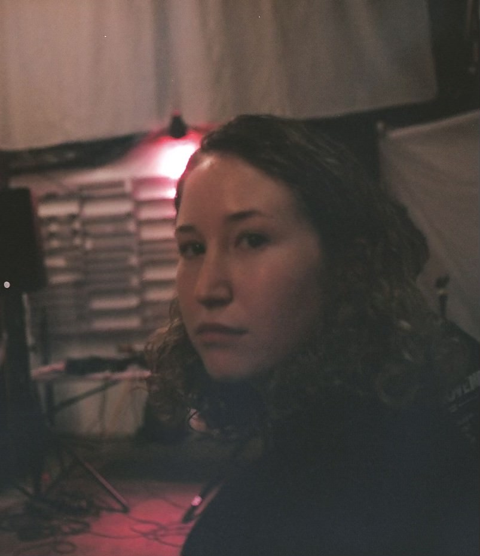

Molly Blasdell is an interdisciplinary artist who specializes in video and sound, often brought together through installation. Their work examines sense of place and self through investigations into memory and its effects on personal identity. Blasdell’s work has been exhibited in the Anderson Gallery as well as Artspace Gallery, and has recently produced an additional work in collaboration with Carl Patow of Artspace. In 2022, they received the Excellence in Kinetic Imaging award from the Anderson Gallery in the Undergraduate Juried Exhibition for their sound installation, Cognizance, as well as in 2023, for their film Egret. In addition to their art practice, Blasdell engages in curatorial work and was nominated to participate in Virginia Commonwealth University’s applied curatorial practices program.
Education
Virginia Commonwealth University
Bachelor of Fine Arts in Kinetic Imaging, Minor in Sound Design
Class of 2024
Nominated to participate in Applied Curatorial Practices two semester course, 2023-2024
Exhibitions and Projects
There Comes a Time (Curator)
The Anderson Gallery
Richmond, Virginia
2024
VCUarts Senior Capstone Exhibition
The Anderson Gallery
Richmond, Virginia
2024
VCUarts Undergraduate Juried Exhibition
The Anderson Gallery
Richmond, Virginia
2023
Impassage Exhibition
The Anderson Gallery
Richmond, Virginia
2023
Behold the Magnificent Kinetic Imaging Juried Student Work Screening
Murry N. Depillars Gallery
Richmond, Virginia
2023
Untitled Installation
Collaborative work with Carl Patow of Artspace Gallery
Richmond, Virginia
2023
Untitled Installation
Artspace Gallery
Richmond, Virginia
2023
VCUarts Undergraduate Juried Exhibition
The Anderson Gallery
Richmond, Virginia
2022
Awards
Best in Kinetic Imaging Award
Undergraduate Juried Exhibition
The Anderson Gallery
2023
Kinetic Imaging Student Work Feature
2023
Kinetic Imaging Award of Excellence
Spring 2023
Best in Kinetic Imaging Award
Undergraduate Juried Exhibition
The Anderson Gallery
2022
Kinetic Imaging Student Work Feature
2022
Professional Experience
Audiovisual Technician
Virginia Commonwealth University Student Commons
Richmond, VA
02/1/23 – Present
Production Assistant
WVCW Student Radio
Richmond, VA
12/18/22
Artist Collaborator Intern
Artspace Gallery
Richmond, VA
12/10/22 – 05/05/23
1708 Gallery Inlight Festival Volunteer
1708 Gallery
Richmond, VA
11/12/21
Skills
Adobe Premiere Pro
Adobe Audition
Adobe After Effects
Adobe Photoshop
Ableton Live
Autodesk Maya
Live Sound Mixing
Dante Level 1 Certification
Audiovisual Networking
Art Handling